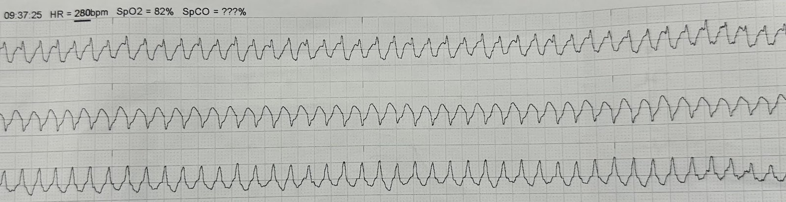
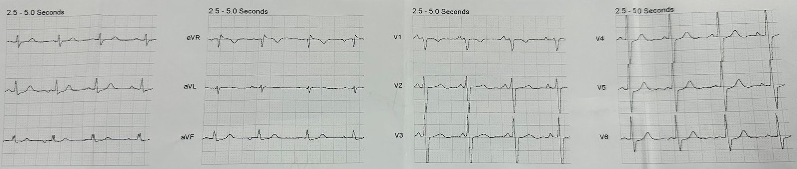
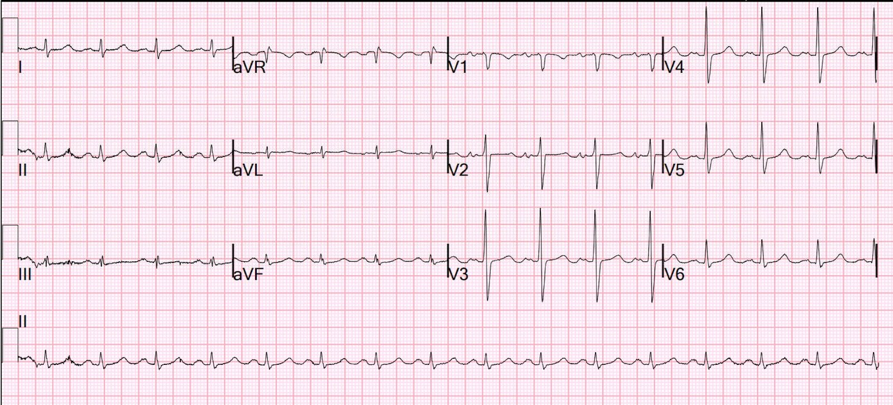
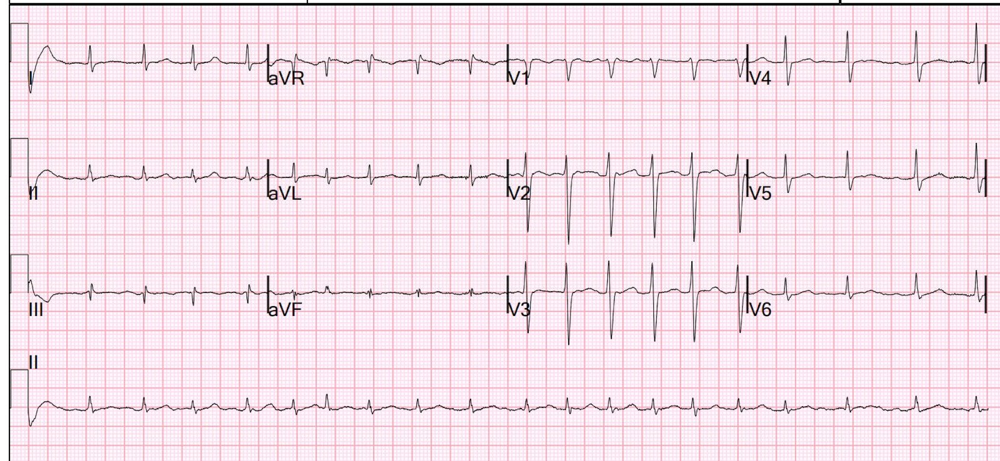
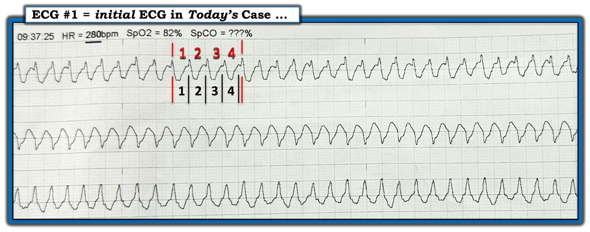

20/09/2024 — Ngất khi đang chạy trên thảm lăn
Bản dịch tiếng Việt của bài "Syncope while on a treadmill" – Dr. Smith’s ECG Blog. Giữ nguyên toàn bộ 8 hình ảnh của bản gốc.
Một người đàn ông ngoài 60 tuổi, trước đó khỏe mạnh, bị ngất khi đang chạy trên thảm lăn. Số 911 được gọi và nhân viên cấp cứu ngoài viện thấy bệnh nhân vã mồ hôi và tụt huyết áp.
Dải nhịp này được ghi lại:


Có vẻ là nhịp nhanh QRS rộng với tần số 280
Bạn nghĩ gì?
Bạn muốn làm gì?
Rất đúng đắn, nhân viên cấp cứu ngoài viện đã sốc điện chuyển nhịp ngay lập tức. Họ cảm thấy không có thời gian để an thần.
Bệnh nhân chuyển về một nhịp trên thất, và một điện tâm đồ 12 chuyển đạo được ghi lại.


Bệnh nhân được đưa tới khoa cấp cứu (ED).
Chẩn đoán từ dải nhịp trên là gì?
Với tôi, đây rõ ràng là cuồng nhĩ dẫn truyền 1:1.
Tần số 280 vừa khớp với cuồng nhĩ. Các sóng trông giống sóng cuồng nhĩ, KHÔNG giống một phức bộ thất rộng. Có những gai nhỏ (phức bộ hẹp) ở đỉnh mỗi sóng — đó là phức bộ QRS hẹp nằm trên một sóng cuồng nhĩ.
Nhưng làm sao nút AV có thể dẫn truyền với tần số 280? Tại sao dẫn truyền AV lại nhanh đến vậy? Vì bệnh nhân đang gắng sức, làm tăng trương lực giao cảm, tạo thuận lợi cho dẫn truyền AV.
Chẩn đoán: Cuồng nhĩ dẫn truyền 1:1, dẫn truyền AV nhanh có được là nhờ kích thích giao cảm do gắng sức
Khi bệnh nhân đến, chúng tôi ghi thêm một điện tâm đồ 12 chuyển đạo:


Không có gì đáng chú ý
Bệnh sử bổ sung: Khó thở khi gắng sức trong một tháng, phủ nhận hồi hộp đánh trống ngực, đau ngực, khó thở khi nằm, phù chân. Gần đây được chẩn đoán rung nhĩ kịch phát từng lúc nhưng không có điện tâm đồ nào để xác nhận.
Troponin 34>33>43, nhiều khả năng thứ phát do tổn thương cơ tim vì nhịp nhanh.
Trong thời gian nằm viện, bệnh nhân tái phát rung nhĩ đáp ứng thất nhanh (RVR) 3 lần và cần sốc điện chuyển nhịp.


Bệnh nhân được bắt đầu dùng amiodarone, thuốc chống đông và metoprolol, và được lên lịch triệt đốt cuồng nhĩ.
Bệnh nhân đã được triệt đốt tại phòng thăm dò điện sinh lý (EP Lab).
Khi ra viện
Tiếp tục amiodarone 400 mg uống ngày hai lần (PO BID) trong 2 tuần, sau đó 200 mg mỗi ngày cho đến lần tái khám
Tiếp tục Toprol XL 25 mg mỗi ngày.
Tiếp tục Eliquis 5mg ngày hai lần (BID), cần duy trì trong 3 tháng

===================================
BÌNH LUẬN CỦA TÔI, bởi KEN GRAUER, MD (20/9/2024):
===================================
Tôi thấy những khía cạnh sau của ca hôm nay đặc biệt đáng quan tâm.
- Tại sao Dr. Smith ngay lập tức nói rằng nhịp này là cuồng nhĩ (AFlutter) kèm dẫn truyền AV 1:1?
- Tại sao bệnh nhân hôm nay lại bị cuồng nhĩ khi đang gắng sức trên thảm lăn?
- Tập luyện sức bền lâu dài có phải là yếu tố nguy cơ của AFib và cuồng nhĩ không?
================================
Tại sao nhịp ban đầu hôm nay là cuồng nhĩ?
MẤU CHỐT để xác định nhịp ban đầu trong ca hôm nay — nằm ở tần số tim. Để minh họa điểm này — tôi đã sao chép lại và đánh dấu trong Hình 1 một đoạn đại diện của nhịp ban đầu hôm nay (cho thấy 3 chuyển đạo theo dõi được ghi đồng thời nhưng không ghi nhãn).
- Như thường được bàn luận trên Dr. Smith’s ECG Blog — xác định nhanh tần số tim thường cung cấp một manh mối quan trọng về căn nguyên của một số nhịp SVT (nhịp nhanh trên thất — SupraVentricular Tachycardia) đều (Xem Bình luận của tôi trong bài ngày 19 tháng Bảy năm 2023, cùng nhiều bài khác).
- Xác định tần số tim thì dễ khi tần số không quá nhanh. Tôi thích đơn giản lấy 300 chia cho số ô lớn trong khoảng R-R. (Xem PHẦN BỔ SUNG của tôi bên dưới nếu bạn muốn một video 3 phút ôn lại cách làm này).
- Ước tính tần số tim nhanh và chính xác khó hơn khi nhịp nhanh và đều. Tôi ưa dùng phương pháp Cách-Một-Nhát (hoặc Cứ-Mỗi-3 hoặc 4 Nhát) — do tôi xây dựng để giúp ước tính tần số nhanh và chính xác. Hãy tìm một phức bộ QRS bắt đầu trên một đường kẻ đậm của lưới điện tâm đồ. Trong bản ghi hôm nay — tôi chọn nhát thứ 10 ở chuyển đạo trên cùng (Xem đường dọc màu ĐỎ thứ 1 trên nhát này trong Hình 1).
- Vì nhịp ban đầu hôm nay rất nhanh — tôi xem khoảng R-R của cứ-mỗi-4-nhát. Lưu ý trong Hình 1 — thời gian cần để ghi 4 nhát (các số màu ĐỎ ở chuyển đạo trên cùng) chỉ hơn 4 ô lớn một chút (các số màu ĐEN trong Hình này). Do đó — MỘT PHẦN TƯ tần số thì chậm hơn một chút so với 300/4 ~70/phút.
- Vì vậy, tần số thực sự của nhịp trong điện tâm đồ #1 là ~70 X 4 ~280/phút.
Biết tần số tim giúp ích như thế nào?
Như tôi đã nhấn mạnh trong Bình luận của tôi ở bài ngày 25 tháng Mười năm 2022 — và bài ngày 6 tháng Ba năm 2020 — việc xác định XEM tần số tim của một nhịp SVT đều có gần 150/phút hay không (tức là khoảng 130 đến 170/phút) cho ta manh mối về việc cần cân nhắc từng nguyên nhân trong 4 nguyên nhân thường gặp của một SVT đều trong chẩn đoán phân biệt (tức là nhịp nhanh xoang — các SVT vào lại [ = AVNRT; AVRT] — cuồng nhĩ — và nhịp nhanh nhĩ (ATach)).
- Một nhịp SVT đều nhanh hơn ~170/phút đáng kể thì ít khả năng là nhịp nhanh xoang ở người lớn — và không có khả năng là cuồng nhĩ dẫn truyền AV 2:1.
- Dĩ nhiên vẫn có những ngoại lệ với quy tắc chung trên (tức là trẻ em có thể có nhịp nhanh xoang vượt xa 200/phút — và đôi khi một người lớn có trương lực giao cảm tăng cao cũng có thể có nhịp nhanh xoang nhanh đến bất ngờ) — nhưng tôi thấy nắm được các giới hạn tần số chung này là hữu ích.
NHƯNG — nhịp ban đầu hôm nay nhanh hơn nhiều = khoảng 280/phút!
- Mặc dù chúng ta chỉ thấy 3 trong 12 chuyển đạo ở Hình 1 — phức bộ QRS có vẻ hẹp và nhịp đều. Dù đường nền có chút gợn sóng — không thấy dấu hiệu rõ ràng của hoạt động nhĩ lặp lại. Do đó, mô tả đúng nhất cho nhịp ban đầu hôm nay là một nhịp SVT đều với tần số ~280/phút, không có dấu hiệu rõ ràng của hoạt động nhĩ.
- Nhịp nhanh xoang không nhanh đến mức này.
- Hướng dẫn năm 2015 của ACC/AHA/HRS về SVT (Page và cs. — Circulation 133(14):e506-e574, 2016) nêu giới hạn tần số trên thường gặp của nhịp nhanh nhĩ lạc chỗ và AVNRT là ~250/phút — dù các nguồn khác cho thấy đôi khi tần số của các nhịp này (và của AVRT ở bệnh nhân có đường phụ) có thể đạt tới 280/phút (StatPearls, 2023).
- Dù vậy — rất hiếm gặp một nhịp SVT đều với tần số ≥280/phút. Do đó, dấu hiệu này cần gợi ý mạnh đến cuồng nhĩ kèm dẫn truyền AV 1:1 (nhịp nhanh nhĩ lạc chỗ và các SVT vào lại vẫn có thể — nhưng về mặt thống kê thì ít khả năng hơn khi tần số thất nhanh như trong ca hôm nay).
- Xin nhấn mạnh: Về lâm sàng — căn nguyên chính xác của một SVT đều với tần số ≥280/phút thường không quan trọng, vì sốc điện chuyển nhịp ngay lập tức thường sẽ được chỉ định bất kể căn nguyên cụ thể là gì (đặc biệt khi bệnh nhân có triệu chứng cấp — như trong ca hôm nay).


Gắng sức có gây ra các rối loạn nhịp nhanh không phải xoang không?
Câu trả lời cho câu hỏi này rất thú vị — dù vượt ra ngoài phạm vi của ECG Blog này. Nhưng một số suy nghĩ về vấn đề này gồm:
- Câu trả lời về tác động của gắng sức lên các rối loạn nhịp nhanh không phải xoang là — Còn tùy … NẾU bệnh nhân là người lớn ở một độ tuổi nhất định, có bệnh tim nền — thì gắng sức mức độ cao ngày càng có khả năng thúc đẩy các rối loạn nhịp nhanh không phải xoang, bao gồm khả năng gây ra rối loạn nhịp thất ác tính. Vì vậy, MẤU CHỐT cần xác định là — Bệnh nhân có bệnh tim nền không?
- Thông tin về tiền sử tim mạch của người đàn ông ngoài 60 tuổi trong ca hôm nay chỉ giới hạn ở việc biết ông bị khó thở khi gắng sức chưa rõ nguyên nhân trong tháng trước đó — và ông gần đây được chẩn đoán AFib (dù không rõ bệnh nhân có đang rung nhĩ trước cơn ngất trên thảm lăn hay không). Cũng không rõ người đàn ông ngoài 60 tuổi này có tập thể dục đều đặn lâu nay hay ít vận động.
- Ở thái cực — CPVT (VT đa dạng do catecholamine — Catecholamine Polymorphic Ventricular Tachycardia) là một thực thể hiếm nhưng quan trọng cần nhận biết vì mối liên quan đã biết với các rối loạn nhịp do gắng sức dù tim có cấu trúc bình thường! (Xem bài ngày 6 tháng Hai năm 2015 trên Dr. Smith’s ECG Blog – và – Báo cáo ca VT đa dạng do gắng sức, của Hoffmayer, Scheinman và cs. — Heart Rhythm 19:1214-1216, 2022).
Câu hỏi đặt ra là — Tập luyện sức bền đều đặn có thể có tác động gì (tích cực hay tiêu cực) ở người lớn không có bệnh tim đã biết (và không có CPVT) — lên khả năng gắng sức mạnh thúc đẩy một rối loạn nhịp nhanh không phải xoang?
- Quan niệm trước đây cho rằng tập luyện đều đặn ở mức độ phù hợp (kể cả tập luyện sức bền) mang lại lợi ích sức khỏe quan trọng, đồng thời nâng cao cảm giác khỏe khoắn.
- Dù vậy — bằng chứng gần đây gợi ý rằng tập luyện sức bền lâu dài có thể làm tăng nguy cơ xuất hiện AFib (và cuồng nhĩ), đặc biệt khi người lớn có tuổi (Opondo và cs. — Circ: Arrhythm & Electrophys 11(5), 2018) — (Calvo và cs. — Br J Sports Med 46(Suppl 1):i37-i43, 2012) — (Burkhart và Gerasimon — J Osteopath Med 118(5):337-340, 2018) — (Müssigbrodt, Mandrola và cs. — Scan J Med & Sci in Sports, 2017).
- Tập luyện “vừa phải” dường như có tác dụng bảo vệ, làm giảm nguy cơ AFib — trong khi tập luyện “quá mức” đã được chứng minh làm tăng đáng kể nguy cơ xuất hiện AFib, đặc biệt khi người lớn có tuổi. Bao nhiêu thì là tập “vừa phải” so với “quá mức” — vẫn chưa có câu trả lời (và dường như rất khác nhau tùy từng cá nhân).
- Một loạt cơ chế có thể đã được đề xuất cho tỷ lệ mắc AFib và cuồng nhĩ tăng lên này ở những người lớn vốn khỏe mạnh khi họ có tuổi. Các cơ chế này gồm — viêm mô tim do tập luyện sức bền lâu dài — hình thành các bất thường cấu trúc do “tim vận động viên” (tái cấu trúc; xơ hóa tâm nhĩ; giãn hoặc lớn tâm nhĩ và/hoặc tâm thất) — tác động của trương lực phế vị tăng kéo dài do luyện tập thể thao — tác động của kích thích giao cảm thường xuyên do tập luyện sức bền — PAC thường xuyên — và có thể cả những cơ chế khác chưa được phát hiện.
ĐIỀU CỐT LÕI: Theo Dr. Smith — trương lực giao cảm tăng do tập luyện tích cực trên thảm lăn có lẽ đã thúc đẩy cơn ngất do rối loạn nhịp nhanh ở bệnh nhân hôm nay (tương tự như nhịp nhanh xoang kéo dài lúc gắng sức tối đa đã gây ra AFib trong Báo cáo ca này của Faris và cs. — Cureus 14(2):e22577, 2022).
- Những thay đổi cấu trúc tim nền có thể đã góp phần bao nhiêu trong việc tạo cơ địa cho người đàn ông ngoài 60 tuổi trong ca hôm nay (người gần đây được chẩn đoán AFib) — vẫn chưa chắc chắn.
- Là người từng giảng dạy ETT (nghiệm pháp gắng sức trên thảm lăn — Exercise Treadmill Testing) ở địa phương và trên toàn quốc cho bác sĩ nội trú và bác sĩ lâm sàng chăm sóc ban đầu — tôi thấy việc có mặt trực tiếp trong lúc làm ETT để đánh giá khả năng gắng sức của người lớn khỏe mạnh nhằm kê đơn tập luyện là rất bổ ích để khuyến nghị các giới hạn tập luyện an toàn.
- Còn nên khuyên gì cho các vận động viên sức bền chuyên nghiệp về các tác động lâu dài tiềm tàng của việc tập luyện sức bền cường độ cao lại là một câu chuyện khác.
PHẦN BỔ SUNG: Trong video 3 phút này — tôi trình bày một phương pháp nhanh, dễ dùng và chính xác để ước tính tần số tim (bao gồm phương pháp Cách-Một-Nhát — để ước tính nhanh tần số tim khi tần số rất nhanh).
Ước tính tần số tim dễ dàng (kể cả khi tần số rất nhanh).